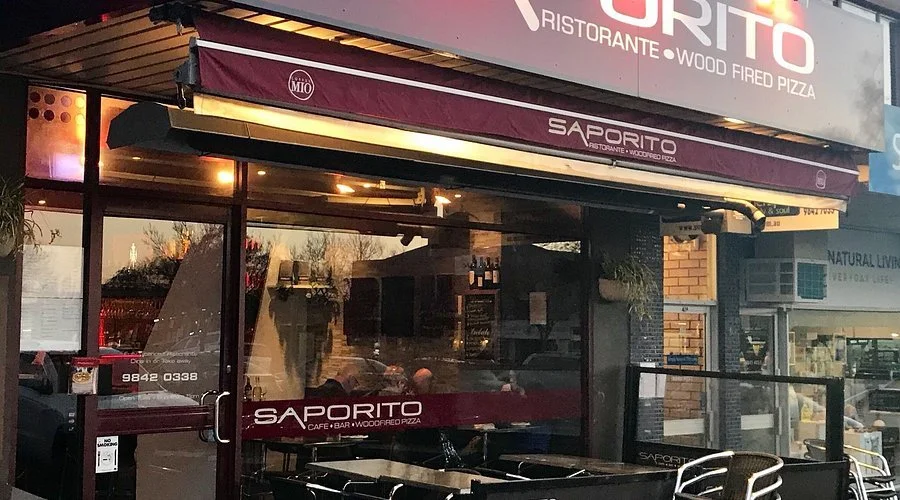
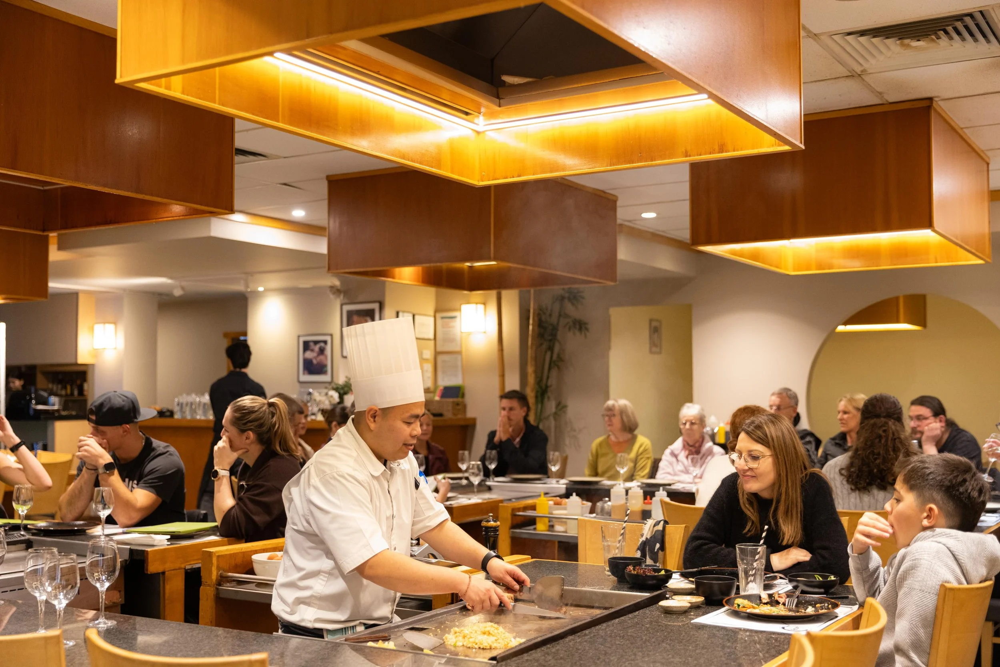
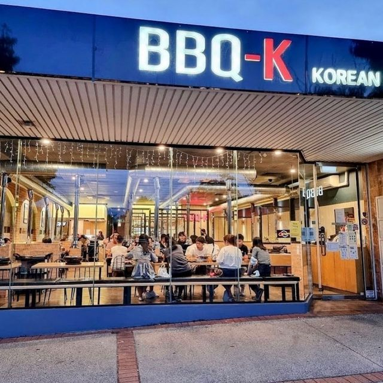
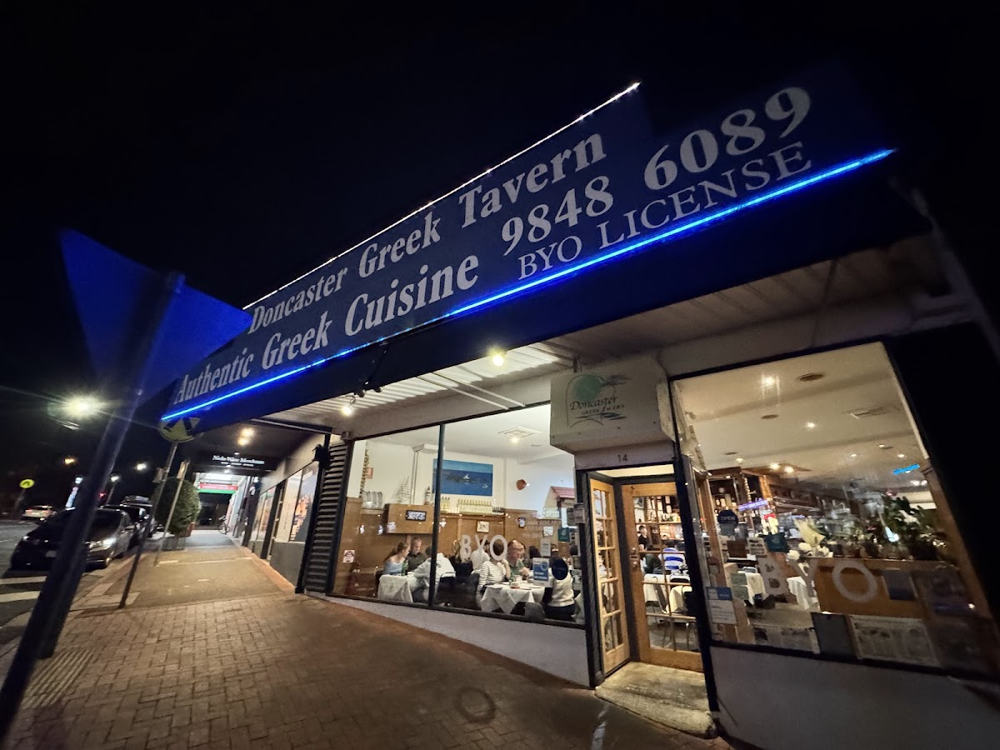
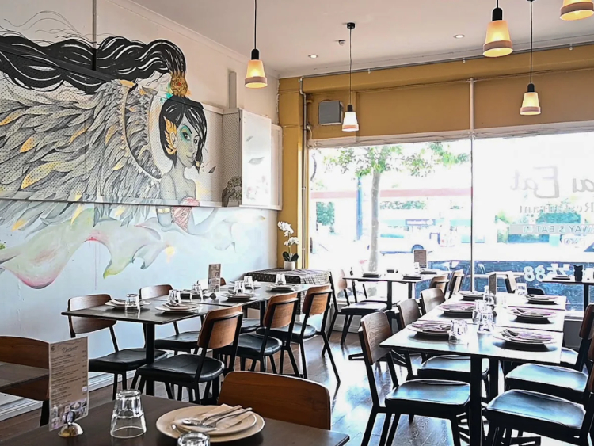
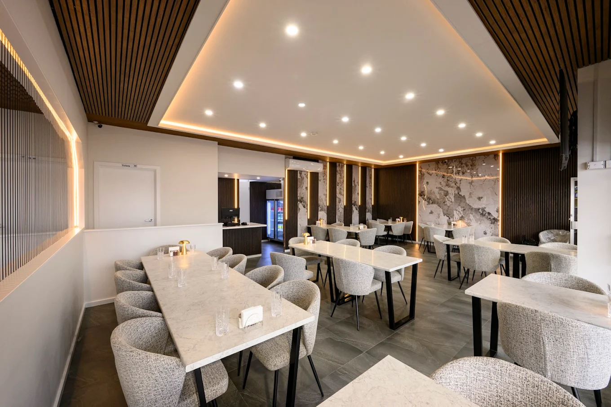

Discover Restaurants Around Doncaster East

Cuisine Type: Italian
Signature Dishes: Seafood Pasta ($32), Woodfired Pizza ($28)
Deposit Amount: $20
Average Price: $35–$45 per person
Saporito Restaurant offers authentic Italian cuisine in a welcoming atmosphere. Guests can enjoy freshly made pasta, gourmet pizzas, and premium seafood dishes. It is ideal for families, couples, and casual dinners.

Cuisine Type: Japanese
Signature Dishes: Teppanyaki Steak ($42), Sushi Set ($30)
Deposit Amount: $25
Average Price: $45–$60 per person
Kobe Teppanyaki delivers an exciting Japanese dining experience where chefs prepare meals live in front of customers. It is suitable for dates, celebrations, and business dinners.

Cuisine Type: Korean BBQ
Signature Dishes: Wagyu BBQ ($38), Fried Chicken ($22)
Deposit Amount: $20
Average Price: $35–$50 per person
BBQ-K Doncaster specialises in premium Korean barbecue with interactive table grilling. Customers enjoy high-quality meats and traditional Korean side dishes, making it perfect for family dinners and group outings.

Cuisine Type: Greek
Signature Dishes: Lamb Souvlaki ($29), Seafood Platter ($36)
Deposit Amount: $15
Average Price: $30–$40 per person
Doncaster Greek Tavern offers Mediterranean flavours with traditional grilled meats, fresh seafood, and family-style meals. The warm atmosphere makes it ideal for families and social gatherings.

Cuisine Type: Thai
Signature Dishes: Pad Thai ($22), Green Curry ($24)
Deposit Amount: $15
Average Price: $25–$35 per person
Thai Eat Restaurant serves authentic Thai dishes packed with flavour and fresh ingredients. Popular among families and couples, it provides a relaxed and friendly dining experience.

Cuisine Type: Persian / Halal
Signature Dishes: Mixed Grill ($34), Lamb Kebab ($28)
Deposit Amount: $20
Average Price: $30–$45 per person
Persian Kebab House offers halal-friendly Persian cuisine featuring charcoal-grilled meats, rice dishes, and traditional flavours. It is well suited for family meals and cultural dining experiences.